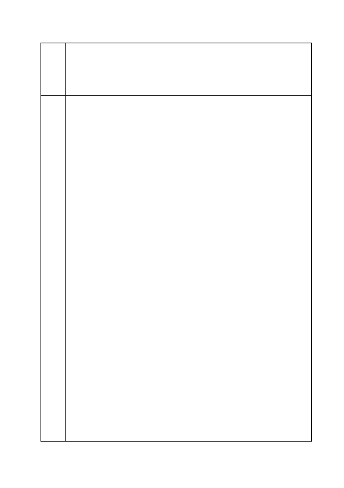

臺北市都市計畫委員會 公民或團體陳情意見綜理表
「變更臺北市信義區逸仙段二小段 33 地號等 21 筆土地（原臺北機廠）
案
名
工業區為創意文化專用區、特定專用區、道路及綠地用地主要計畫案」
及「擬定臺北市信義區逸仙段二小段 33 地號等 21 筆土地（原臺北機
廠）創意文化專用區、特定專用區、道路及綠地用地細部計畫暨劃定
都市更新地區計畫案」
（六）為避免園區建築量體形成對文化資產之圍鎖封閉效果，細部計
畫都市設計管制準則已增訂高度管制，將計畫區劃分為五個高度管制
區，儘可能降低新建建築物對文化資產產生的景觀衝擊。
（七）本計畫總容積係依都市計畫工業區檢討變更審議規範及本市通
案處理原則予以計算，未來臺鐵局可開發總容積不得大於 350,853.30
平方公尺（臺鐵局管有土地面積 167,073 平方公尺 x 300% x 70%），
再配合高度管制規定，將容積分配至特（一）至特（四）。
（八）有關臺北機廠容積調派至申請單位於本市其他土地之建議，由
於申請單位（臺鐵局）於臺北市尚有其他因文資而容積受限之基地需
進行容積調派（如臺北車站特定專用區 D1 西半街廓），縱將臺鐵局
於本市其他土地（包括八德都市更新地區、師大宿舍、杭州北路宿舍、
南港調車場 4 筆土地）作為容積調派接受基地，仍無法將 D1 西半街
廓之剩餘容積全數移入，故臺北機廠容積實無法再移至前開 4 筆土
地。至是否可調派至臺北市其他公有土地，經函請財政部國有財產署
依臺北市都委會意見，提供有關臺北機廠容積調派至臺北市其他國有
土地之可行性。經財政部國有財產署於 103 年 6 月 20 日回復說明略
以：「查國有財產法相關規定並無明文禁止國有公用土地容積調派至
其他國有土地，爰透過都市計畫擬定、變更程序，於都市計畫書規範
並作為執行依據，尚屬可行。惟目前僅有將容積調派至同一機關經管
之其他國有土地，尚無土地容積調派至他機關經管國有土地之案例可
循，且涉貴局資產活化償債計畫，爰請貴局先就國有接受基地後續處
理得款如何分收研提可行方式，再提供須本署協助調派至他機關經管
國有土地之容積量，俾憑篩選適當之國有可建築用地」。嗣經交通部
臺灣鐵路管理局 103 年 7 月 22 日邀財政部國有財產署、內政部營建
署及本府都市發展局等相關單位研商本案容積調派之可行性，財政部
國有財產署確認目前臺北市境內查無大面積國有土地可作為本案容
積調派之接受基地，且國有接受基地得款分收仍有容積買賣計價及土
地交換等執行問題尚待克服。
（九）有關西側南北向道路設置理由說明如下：
1. 因應臺北文化體育園區未來開發完成後衍生之交通需求，大
巨蛋 BOT 契約載明開闢北延道路紓解交通負荷為市府應辦
事項，松菸 BOT 亦於招標文件將北延道路列為市府承諾事
第 138 頁/共 154 頁